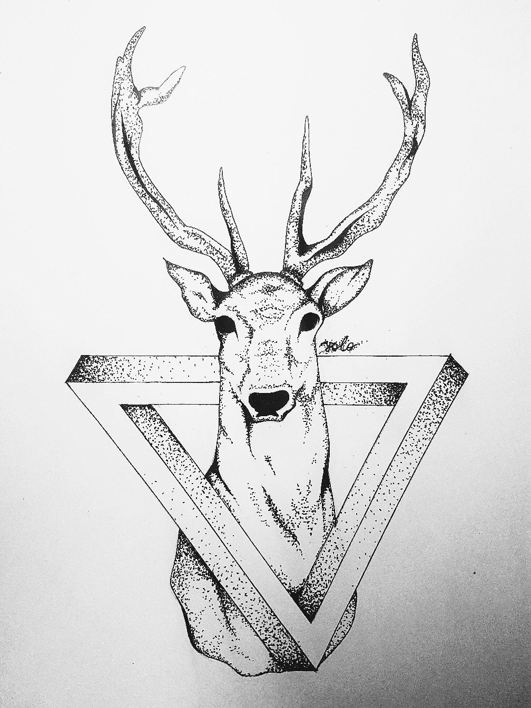
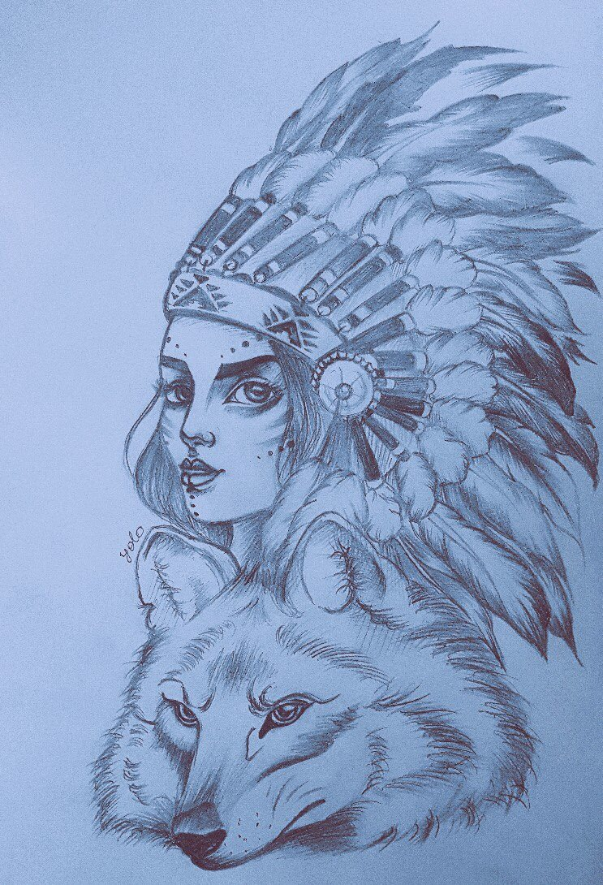

- Найбільш успішні шкільні предмети:
- Українська література; Зарубіжна література; Німецька мова; Історія України; Всесвітня історія; Технології; Астрономія; Захист Вітчизни ті інш.
- Коло інтересів:
- Існує багато речей, які викликають у мене інтерес, проте серед них я хочу виділити малювання простим олівцем та катання на велосипеді.
Малювати я ніколи не вчилась. Просто з дитинства в мене добре виходило перемальовувати фігури та обличчя улюблених героїв з мультфільмів та коміксів, а пізніше – обличчя людей з фотографій. Згодом мені стали купувати різні книжки з малювання. Я тренувалась малювати на різні теми, проте мені досі цікавіше за все робити портрети простим олівцем. Я малюю не з натури, а з фотографій – сімейних та журнальних. Мені подобається, що під час малювання я залишаюся сам та можу сконцентруватися на тому, що роблю. Цікаво, що хоча це кропіткий, енергоємний процес, поки малюю, я дійсно відпочиваю. Зараз я викладаю фото своїх робіт в інтернет. Мені приємно, коли в мене виходить гарний малюнок, який подобається іншим людям. Гадаю, коли в мене буде більше вільного часу, я піду вчитися до художньої школи, щоб розвивати свої здібності.
Коли в мене з’явилось моє захоплення, кожен мій день став цікавим. Мені легше даються домашні справи та уроки, бо я з нетерпінням чекаю можливості присвятити час своїм захопленням. Мені ніколи не сумно, а в голові постійно безліч творчих ідей. На мою думку, кожна людина має знайти для себе такі заняття, які дозволяють їй одночасно розвивати свої здібності, відпочивати, приємно проводити час та знайомитися з цікавими людьми.
- Результати інтелектуальних, творчих, спортивних змагань:

- Моїми результатами є:
зайняте 2 місце з олімпіади по німецькій мові та по математиці протягом 2016-2018рр;
зайняла 1-2 місця з різних творчих конкурсів;
2-3 міцсця з гри "волейбол" та "настільний теніс"

- Акаунти у соцмережах:
- Instagram : @wrooongg
- Telegram : @wrooongg